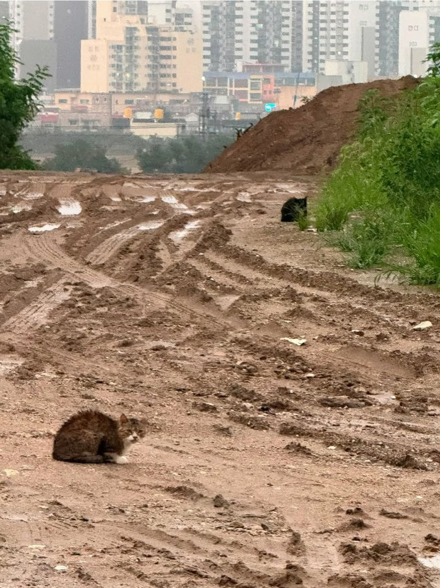
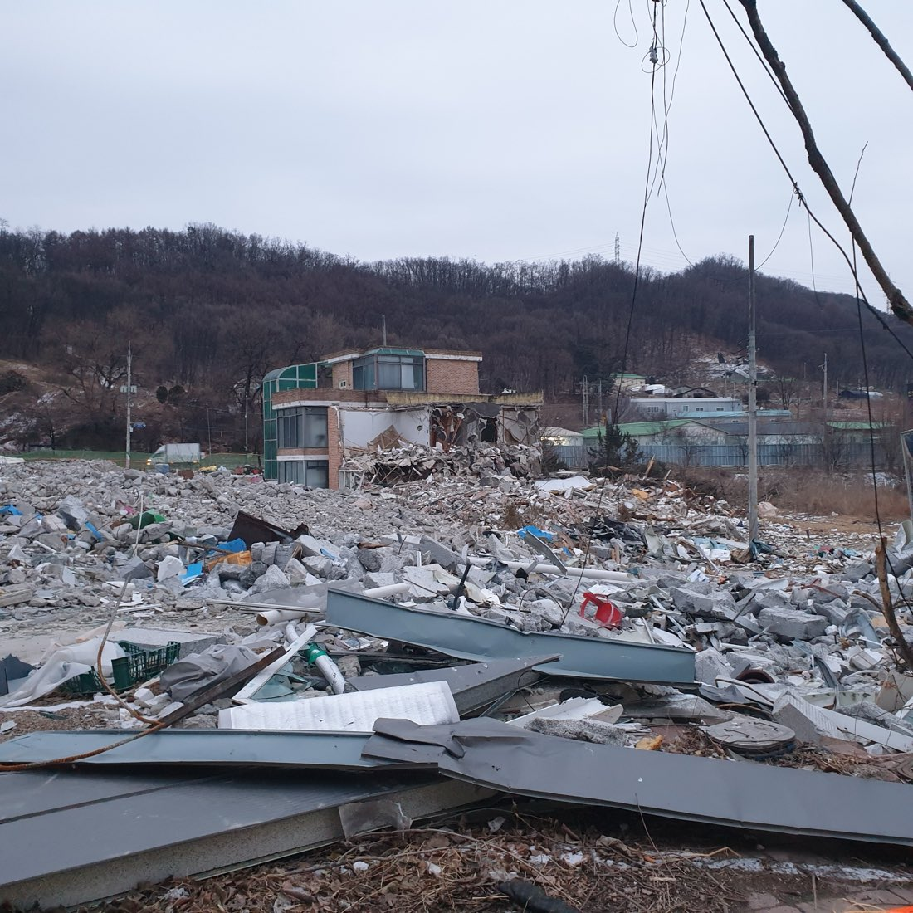
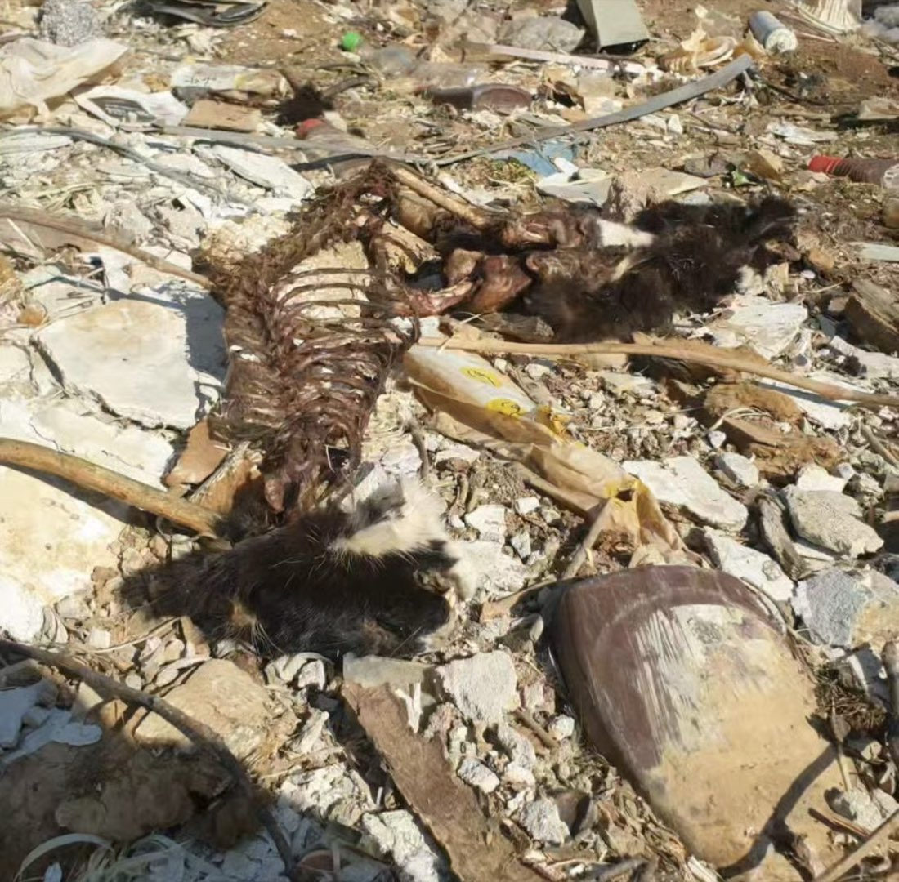
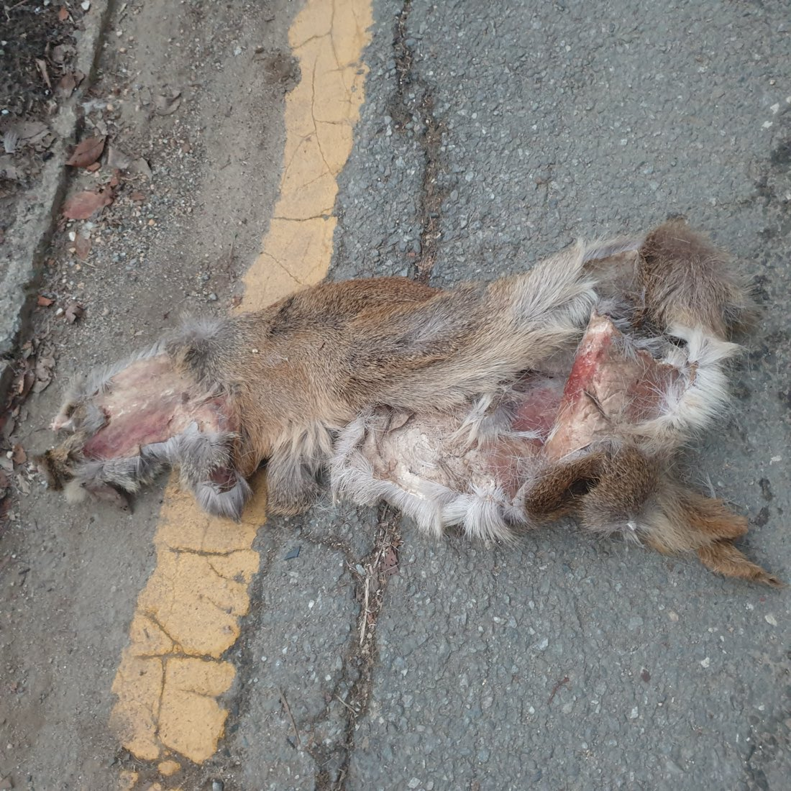
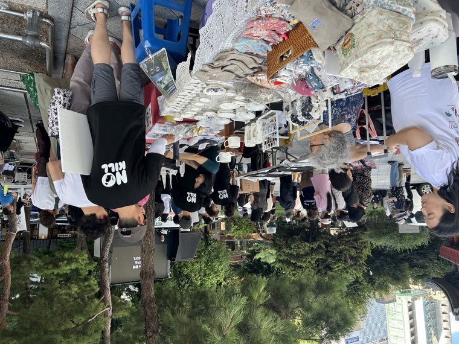
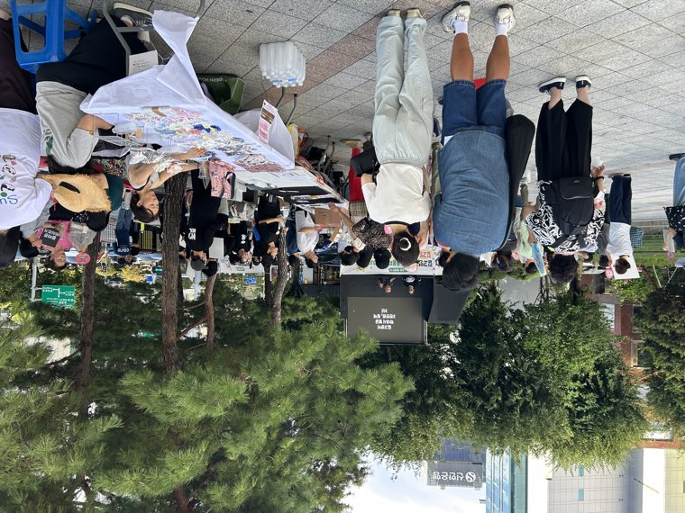
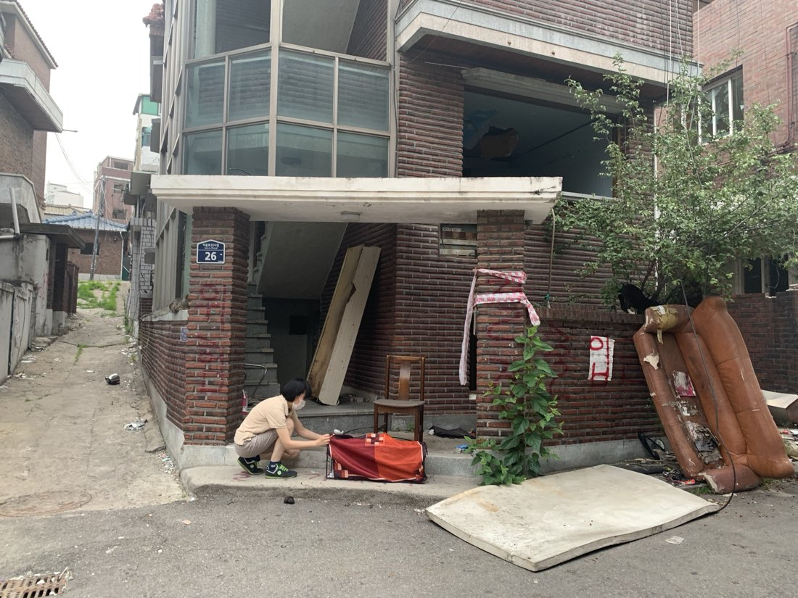
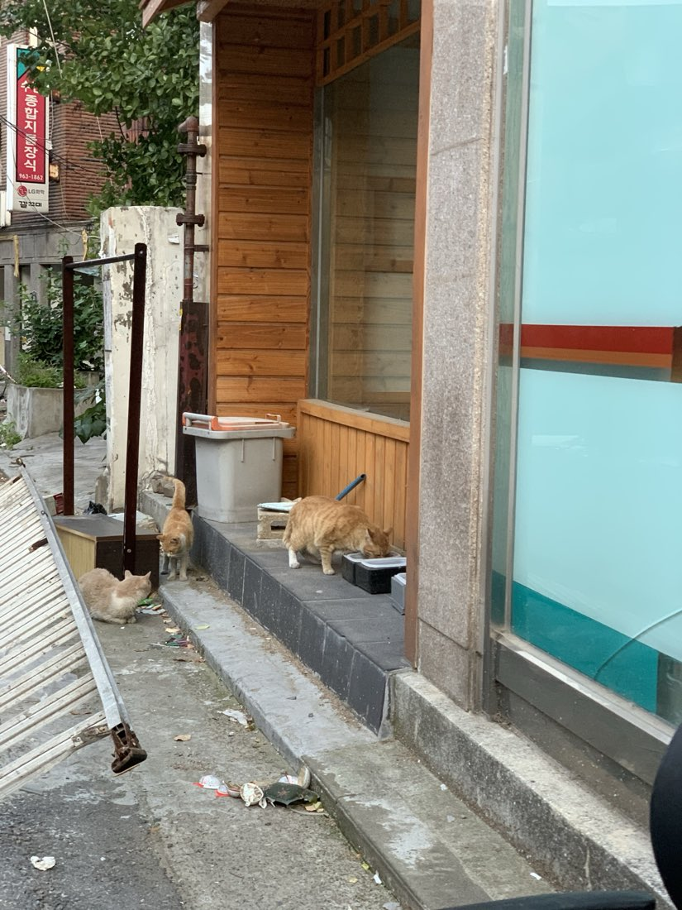

재개발 지역 길고양이 구조 의무화 특별법 · 국민동의청원
지금까지 모인 서명
5만 명을 넘었습니다. 국회가 이 청원을 심사합니다.
사람이 떠난 동네에 고양이가 남습니다.
이사는 사람만 갑니다. 밥그릇은 빈 채로 남고, 도로가 막히고, 돌보던 사람도 들어갈 수 없게 됩니다. 그다음에 중장비가 들어옵니다.
지금 대한민국에는 이 상황을 막을 법이 하나도 없습니다.
매년 전국 2,000~3,000개 구역에서 재개발과 재건축이 진행됩니다. 그 안에 살던 고양이들은 어느 날 갑자기 먹이도, 물도, 숨을 곳도 없는 공사장 한복판에 남겨집니다.

굶어 죽습니다. 먹이를 찾아 도로를 건너다 차에 치입니다. 무너지는 콘크리트에 깔립니다. 철거 잔해에 그대로 묻히기도 합니다.


경기도 하남 교산지구는 686만 제곱미터, 208만 평에 이르는 개발 현장입니다. 사람들이 거의 다 떠난 지금도 그곳에는 천 마리 가까운 고양이가 남아 있는 것으로 추정됩니다.
그 고양이들의 밥을 챙기는 사람은 한 명입니다. 하루 열 시간 넘게 열다섯 곳을 돌며 사료 오십 킬로그램을 나릅니다. 매일.
현행법은 재개발을 시작할 때 사람의 이주대책은 반드시 세우도록 하고 있습니다.
같은 땅에 살던 동물에 대해서는 아무것도 요구하지 않습니다.
그래서 지금 이 문제는 전적으로 개인의 몫입니다. 자기 돈으로 사료를 사고, 자기 시간을 들여 공사장을 돌고, 포기하면 그 동네 고양이는 그대로 죽습니다. 개인의 선의가 끊기는 순간 아무 대책이 없는 구조입니다.
일반적인 중성화(TNR)로도 해결되지 않습니다. TNR은 수술 후 살던 자리로 돌려보내는 것을 전제로 하는데, 재개발 지역은 그 자리가 사라지기 때문입니다.
7월 8일 동대문구청 앞에서 200여 명이 모여 급식소 철거에 반대했습니다. 7월 29일에는 재개발 지역 동물 구조를 요구하는 기자회견을 열었고, 8월 8일 다시 거리에 섰습니다.
하지만 거리에서 외치는 것만으로는 바뀌지 않습니다. 이 청원에 동의해 주세요.




지금 이 순간에도 그 동네에는 고양이가 살아 있습니다.
까지입니다.
5만 명을 넘었습니다. 국회가 이 청원을 심사합니다.